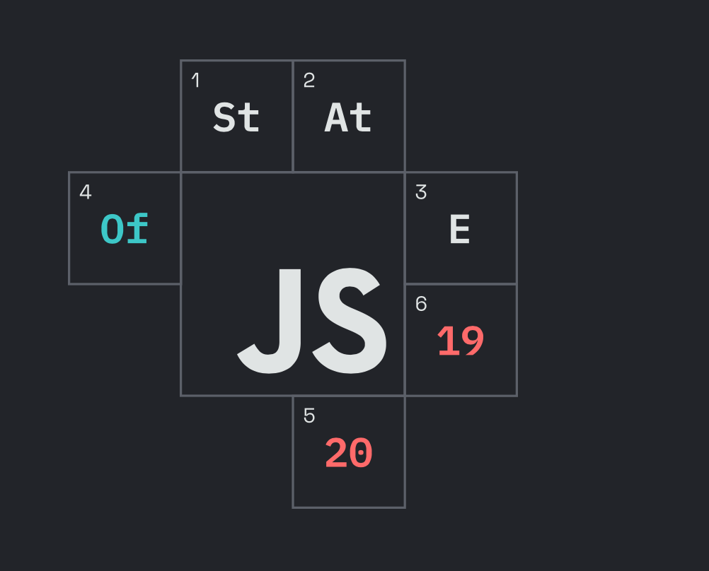
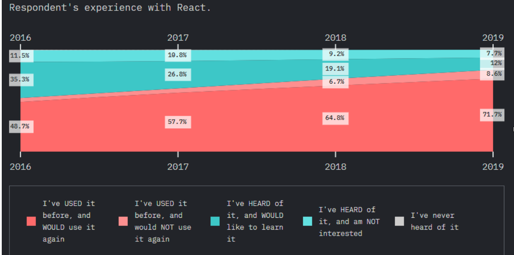
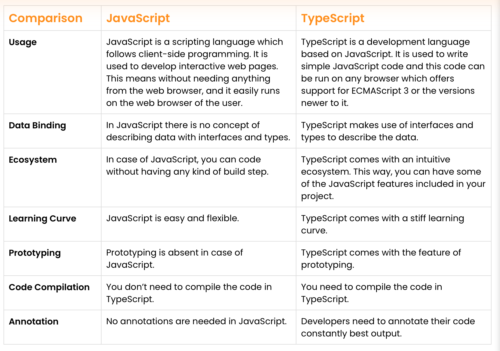
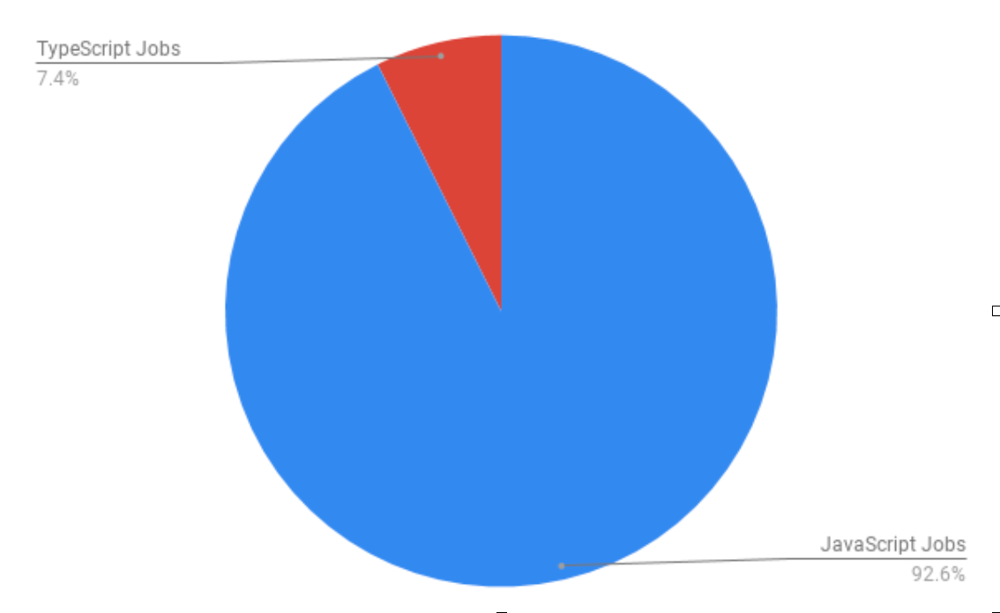

Web development is emerging dynamically as new tech and technologies are changing at a greater extent. Following the recent trend in web development is crucial than ever. Technologies started way back in days are still standing strong, whereas the new development technologies are booming with the application market’s rise.
What are the web development trends we need to consider? In this highly competitive digital market, it's noteworthy to mention, developers and business entities need to adopt the technology amid user interest and usability. We have researched a few industries and sort out pioneer web development trends in the present and beyond.
JavaScript keeps getting betterThe last year's JavaScript trend report shows developers are considering it as the rapidly growing programming language for web development. JavaScript did not get here easily; in 2009, when it started, jQuery was about to engulf the functionality of JavaScript. To this day, it has stretched its wings to become the smartest choice of a developer. The endless dedication of JavaScript towards framework development has powered the modern trend of web apps. JavaScript is not going anywhere soon. Here, we are looking after the trend marks set by JavaScript collected from various sources.
State of JS Survey  React’s dominationSince Facebook launched React JS, it has been dominating the web development technology trend. It is an open-source JavaScript framework enriched with developing web apps. The functionality of JavaScript is minimal; a simple code is powerful enough to generate web apps efficiently. React JS has gained a large community quickly, there won't be an issue if one gets stuck while programming; the solution is always there. React JS makes project handling more manageable; it does not ask developers to rework frequently. The robust programming language ensures faster rendering with any of the browsers.
Benefits of React JS:When it comes to user interface development, known as front-end development, React, and Angular JS are the big names. Last year, we witnessed a slight dip in technology implementation; however, the global trend of React and Angular JS is expected to rise. It's reported 71% of recurring developers are considering a return to JS. It is a slight satisfaction in the increase, which is expected to grow shortly.
The following graph shows the aggregated job posting by the end of 2019. The JavaScript frameworks are ruling the web development market. As of the figure, React JS is at the substantial lead, attracting 37% of the share, whereas Angular JS shares the list of about 25%.
TypeScript Consensus will surgeInformation Technology never stops evolving. With the increase in digitalization, the web development market is on the rise. It's about time to learn details on the likely future web technology trends and its TypeScript. TypeScript is a subset of JavaScript; the existing application on JavaScript would be valid in TypeScript. It basically improves coding behavior with Object-oriented programming and static typing.
You might be wondering, is it time to entail TypeScript in the enterprise. The answer would be- Yes! The typeScript was a progressive year for 2019. It is expected to sky-rocket shortly due to its coding environment and understandability. There has been a case where developers report that TypeScript is developer-friendly. It has fewer bugs, and code is simple to read. The tool interface in TypeScript generates self-documentation; with these features and usability, the opportunity of TypeScript is vivid in the coming days. The gratification of developers implementing TypeScript in web development is definite as of now. It's forth to see what the future brings.
Every now and then, the functionality of TypeScript is usually evolving, including grammar. With the welcomed features and syntax, developers find it easy to execute impactful code.
 Why Developers Love to Use TypeScript in 2020?A handful of reasons can be mentioned why TypeScript is the hot trend in web development. A few of the roles of TypeScript in development are discussed below.
Although there is less (7.4%) of posting in openings jobs of TypeScript, it's expected to remain solid in the coming days. TypeScript is in high demand in the job market. Since TypeScript is proprietary of JavaScript, you should not be afraid if you love TypeScript. That being said, both of the technology is stable in web development. It should not hurt your coding practices; somewhat, in the future, it is expected to increase the productivity of your company. TypeScript is leaner towards the bug reduction benefits, whereas JavaScript focuses on interoperability and functionality.
 Top 5 reasons why enterprises will acknowledge JavaScript and TypeScript for web development